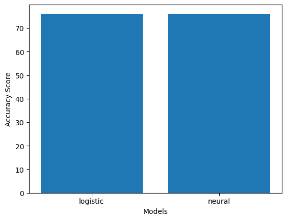

using Pkg
Pkg.status()6 The End-to-end Workflow: A recap
I. Environment Setup
Step 1: Open the Project folder in VS Code
Go to File –> Open Folder.
Step 2: Start Julia REPL
Press Cmd + Shift + P (Mac) / Ctrl + Shift + P (Windows), and then search for Julia: Start REPL. Hit enter to choose the option from the dropdown menu
Step 3: Activate Project Environment
- Go to package manager mode. (Press
]while in Julia REPL to go to Package Manager mode). Then typeactivate .and hit enter. Now you should see your project folder name instead of(@v1.7) pkg>. - Return to Julia REPL mode by hitting backspace
Step 4: Create new Julia file for your project
- Go to File –> New File
- Save the file with a name you like. To save the file you can do
Cmd+S/Ctrl+S.
Step 5: Make sure you have the required packages
- CSV
- DataFrames
- PyPlot
- ScikitLearn
If some packages are missing, you’ll get an error in the next step.
Step 6: Load the packages
using DataFrames
using CSV
using ScikitLearn
using PyPlotII. Data
Step 7: Load the Data
pathtodata = joinpath(pwd(), "diabetes.csv")
data = CSV.read(pathtodata, DataFrame);- Instead of
diabetes.csv, pass your dataset name.
Step 8: Inspect the data columns
first(data,5)5 rows × 8 columns
| npreg | glu | bp | skin | bmi | ped | age | type | |
|---|---|---|---|---|---|---|---|---|
| Int64 | Int64 | Int64 | Int64 | Float64 | Float64 | Int64 | String3 | |
| 1 | 6 | 148 | 72 | 35 | 33.6 | 0.627 | 50 | Yes |
| 2 | 1 | 85 | 66 | 29 | 26.6 | 0.351 | 31 | No |
| 3 | 1 | 89 | 66 | 23 | 28.1 | 0.167 | 21 | No |
| 4 | 3 | 78 | 50 | 32 | 31.0 | 0.248 | 26 | Yes |
| 5 | 2 | 197 | 70 | 45 | 30.5 | 0.158 | 53 | Yes |
- If you find columns that are redundant or meaningless, delete those columns. For example, suppose we had a meaningless column called
RowNo. To delete the column you can use the commanddata = select(data,Not(:RowNo)). Make sure you only run the delete command once per column. Trying to run it multiple times will give you an error.
Step 9: Extract the features and target
X = Array(data[!,Not(:type)]);
y = Array(data[!, :type]);- Instead of
:typein the above code, you should use the column name you have for your target.
III. Model Training
Step 10: Split the data into training set and test set.
@sk_import model_selection: train_test_split;
X_train, X_test, Y_train, Y_test =
train_test_split(X, y, test_size=0.2,
random_state=42);- Here I chose 20% for test set (so 80% of the actual data will be used for training).
Step 11: Build a baseline model
Before going into complicated models, it’s recommended that you try a simple model first. You’ll call this your baseline model. In our case, we’ll have a simple logistic regression model our baseline.
@sk_import linear_model: LogisticRegression;
simplelogistic =LogisticRegression();
fit!(simplelogistic, X_train, Y_train);Step 12: Check the accuracy of your baseline model
@sk_import metrics: accuracy_score
Y_pred_train = predict(simplelogistic,X_train);
print(accuracy_score(Y_train,Y_pred_train))0.7886792452830189Step 13: Create a slightly complicated model and check its accuracy
We’ll have a shallow neural network with one hidden layer and 5 nodes as our slightly complicated model.
@sk_import neural_network: MLPClassifier;
simpleneuralnetwork = MLPClassifier(hidden_layer_sizes=(5));
fit!(simpleneuralnetwork, X_train, Y_train);
Y_pred_train = predict(simpleneuralnetwork,X_train);
print(accuracy_score(Y_train,Y_pred_train))0.5811320754716981Step 14: Search the model space for better hyperparameters with 3-Fold cross validated training
using ScikitLearn.GridSearch: GridSearchCV
gridsearch_logistic = GridSearchCV(LogisticRegression(),
Dict(:solver => ["newton-cg", "lbfgs", "liblinear"],
:C => [0.01, 0.1, 0.5, 0.9]))
fit!(gridsearch_logistic, X_train, Y_train);:Cis a regularization parameter.- For more hyperparameters that are tweakable, please refer to LogisticRegression’s ScikitLearn documentation page.
Print the results of hyperparameter search
gridsearch_logistic_results = DataFrame(gridsearch_logistic.grid_scores_);
hcat(DataFrame(gridsearch_logistic_results.parameters),
gridsearch_logistic_results)[!,Not(:parameters)]12 rows × 4 columns
| solver | C | mean_validation_score | cv_validation_scores | |
|---|---|---|---|---|
| String | Float64 | Float64 | Array… | |
| 1 | newton-cg | 0.01 | 0.8 | [0.764045, 0.829545, 0.806818] |
| 2 | lbfgs | 0.01 | 0.8 | [0.764045, 0.829545, 0.806818] |
| 3 | liblinear | 0.01 | 0.720755 | [0.696629, 0.715909, 0.75] |
| 4 | newton-cg | 0.1 | 0.796226 | [0.775281, 0.806818, 0.806818] |
| 5 | lbfgs | 0.1 | 0.796226 | [0.775281, 0.806818, 0.806818] |
| 6 | liblinear | 0.1 | 0.735849 | [0.719101, 0.704545, 0.784091] |
| 7 | newton-cg | 0.5 | 0.784906 | [0.775281, 0.772727, 0.806818] |
| 8 | lbfgs | 0.5 | 0.784906 | [0.775281, 0.772727, 0.806818] |
| 9 | liblinear | 0.5 | 0.739623 | [0.707865, 0.727273, 0.784091] |
| 10 | newton-cg | 0.9 | 0.792453 | [0.775281, 0.772727, 0.829545] |
| 11 | lbfgs | 0.9 | 0.792453 | [0.775281, 0.772727, 0.829545] |
| 12 | liblinear | 0.9 | 0.754717 | [0.730337, 0.738636, 0.795455] |
The best model from the grid search will be saved in best_estimator_ field of your grid search training results.
best_logistic_model = gridsearch_logistic.best_estimator_PyObject LogisticRegression(C=0.01, solver='newton-cg')Step 15: Repeat GridSearchCV for other models you have
- Just don’t simply use the list of numbers I have used for the
hidden_layer_sizes. It might make sense to have 1000s of nodes and many hidden layers if you are doing image processing.
Sometimes, you might have to do multiple grid search rounds with different hyperparameter settings to find the most optimal values.
gridsearch_neuralnet = GridSearchCV(MLPClassifier(),
Dict(:solver => ["sgd", "lbfgs", "adam"],
:hidden_layer_sizes => [(2), (20), (1,5,10), (10,10), (10,20,10)]))
fit!(gridsearch_neuralnet, X_train, Y_train);
gridsearch_neuralnet_results = DataFrame(gridsearch_neuralnet.grid_scores_);
hcat(DataFrame(gridsearch_neuralnet_results.parameters),
gridsearch_neuralnet_results)[!,Not(:parameters)]15 rows × 4 columns
| solver | hidden_layer_sizes | mean_validation_score | cv_validation_scores | |
|---|---|---|---|---|
| String | Any | Float64 | Array… | |
| 1 | sgd | 2 | 0.69434 | [0.685393, 0.693182, 0.704545] |
| 2 | lbfgs | 2 | 0.728302 | [0.685393, 0.693182, 0.806818] |
| 3 | adam | 2 | 0.65283 | [0.696629, 0.693182, 0.568182] |
| 4 | sgd | 20 | 0.724528 | [0.674157, 0.727273, 0.772727] |
| 5 | lbfgs | 20 | 0.720755 | [0.685393, 0.715909, 0.761364] |
| 6 | adam | 20 | 0.656604 | [0.539326, 0.738636, 0.693182] |
| 7 | sgd | (1, 5, 10) | 0.690566 | [0.685393, 0.693182, 0.693182] |
| 8 | lbfgs | (1, 5, 10) | 0.735849 | [0.685393, 0.829545, 0.693182] |
| 9 | adam | (1, 5, 10) | 0.588679 | [0.685393, 0.306818, 0.772727] |
| 10 | sgd | (10, 10) | 0.683019 | [0.674157, 0.681818, 0.693182] |
| 11 | lbfgs | (10, 10) | 0.720755 | [0.764045, 0.693182, 0.704545] |
| 12 | adam | (10, 10) | 0.69434 | [0.674157, 0.670455, 0.738636] |
| 13 | sgd | (10, 20, 10) | 0.716981 | [0.730337, 0.727273, 0.693182] |
| 14 | lbfgs | (10, 20, 10) | 0.758491 | [0.685393, 0.795455, 0.795455] |
| 15 | adam | (10, 20, 10) | 0.701887 | [0.719101, 0.693182, 0.693182] |
best_neuralnetwork_model = gridsearch_neuralnet.best_estimator_PyObject MLPClassifier(hidden_layer_sizes=(10, 20, 10), solver='lbfgs')Step 16: Compare the results of competing models on test set
@sk_import metrics: accuracy_score
Y_pred_test_logistic = predict(best_logistic_model, X_test)
logistic_accuracy = accuracy_score(Y_test,Y_pred_test_logistic)
Y_pred_test_neural = predict(best_neuralnetwork_model, X_test)
neural_accuracy = accuracy_score(Y_test,Y_pred_test_neural)
models = ["logistic","neural"]
scores = [logistic_accuracy, neural_accuracy]
# Plotting the results
using PyPlot
figure()
b = PyPlot.bar(x = models, height = scores*100);
xlabel("Models");
ylabel("Accuracy Score"); 
Here we have used accuracy for comparison. You can also use precision, recall, or f1 score in a similar fashion for comparing models, depending on the domain of prediction.
Step 17: Save your best model for production
The model you found to be the best performing one can be saved to the disk so that you don’t have to train your models every time you restart Julia or you want to make predictions. We’ll need three packages to save a scikit-learn model: PyCall, PyCallJLD, and JLD
using PyCall, JLD, PyCallJLD
save("saved_file.jld", "diabetic_prediction", best_logistic_model)- The save function takes three arguments: the name of the file, the name you want to give to the model, the trained model.
To load a saved scikit-learn model, you can use the load function:
logistic_model = load("saved_file.jld", "diabetic_prediction")PyObject LogisticRegression(C=0.01, solver='newton-cg')Now let’s check if our loaded model is working.
predict(logistic_model, X_test)[1:4]4-element Vector{Any}:
"No"
"No"
"No"
"No"